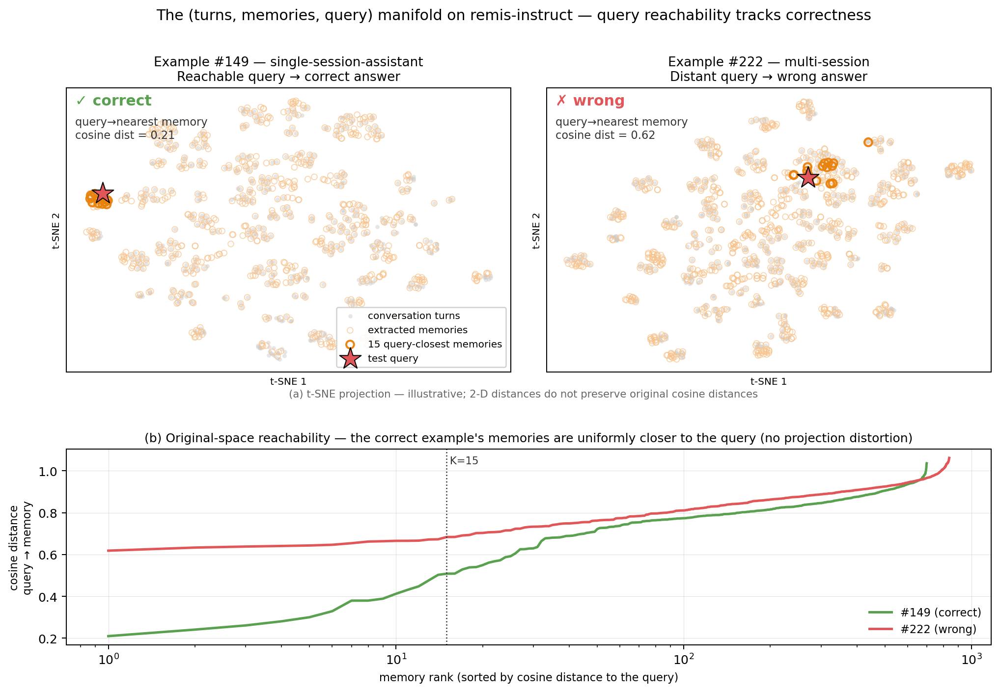
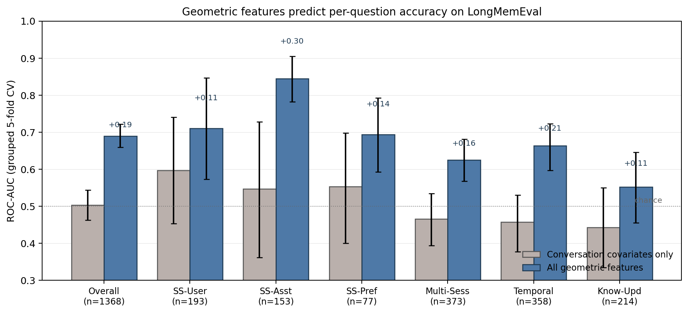
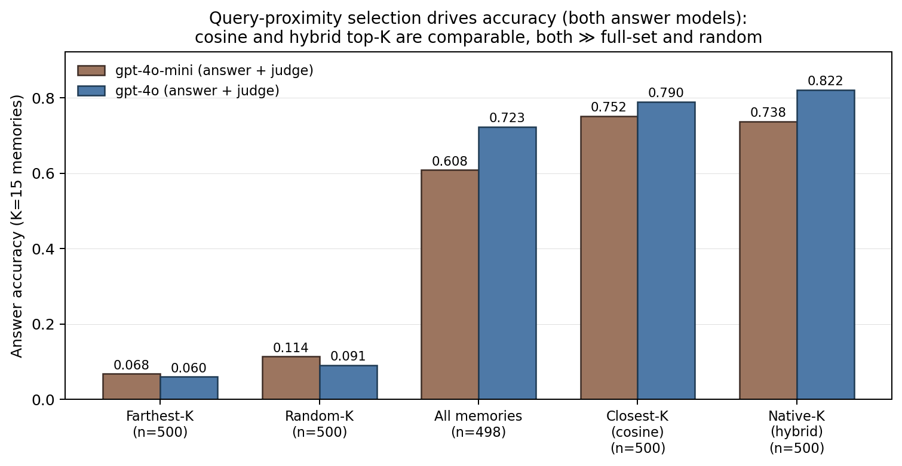
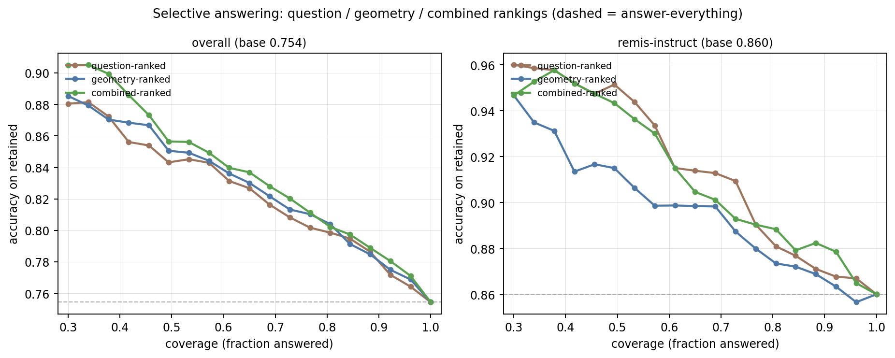

Agent memory · Failure forecasting · July 2026
The Geometry of Agent Memory
We tested whether embedding geometry can flag questions that an agent memory system is likely to answer incorrectly—before the answer is generated and without another generative LLM call.
What we measured
A diagnostic, not a replacement for evaluation
The forecast. A classifier uses distances and structure in the joint space of conversation turns, stored memories, and the incoming query to estimate whether an answer will be correct.
The headline number. ROC-AUC 0.689 pools 1,368 rows from three systems. On one fixed system—the way it would be deployed—the observed ROC-AUC is about 0.63.
The boundary. This does not replace end-to-end testing, rank memory systems, or provide a better retriever. It is a per-question warning signal with clearly measured limits.
The intuition
A query can be close to the stored memory—or far from it
Memory systems already represent queries and memories as vectors. Conversation turns can be placed in the same space. Together they form a point cloud that shows how well the stored memory covers the conversation and whether the query can reach relevant information.
The top panels are illustrative t-SNE views of one correct and one incorrect example. The lower panel uses original-space cosine distance: memories for the correct example are closer to its query across the ranking.

The question
Can memory failures be forecast before answering?
End-to-end benchmark accuracy tells us how often a memory system succeeds in aggregate. It does not tell a deployed agent which individual questions are risky enough to defer, escalate, or answer with a fallback.
We computed 25 features from the embedding cloud and trained a logistic regression model to predict per-question correctness. The features require no ground-truth label or generative LLM call at inference time. Training and evaluation still use correctness labels, as any supervised forecaster does.
Five feature families
Different views of the same memory state
Conversation structure
How turns cluster by session, including session separation and cluster count.
Memory coverage
How far each turn is from its nearest memory, including worst-case gaps.
Memory dispersion
How many distinct directions the memory set covers and how redundant it is.
Query reachability
How close the query is to nearby memories and to the original conversation.
Session alignment
Whether stored memories preserve or bridge the conversation’s session structure.
Systems studied
Three contrasting memory setups
The analysis uses locked LongMemEval-small runs with GPT-4o answering. Remis retrieves semantic chunks from raw conversations. The source runs named Redis-Instruct and Remis-Instruct add extracted memories with dense or hybrid retrieval; here we call them Redis Agent Memory — Instruct and Redis Agent Memory — Remis + Instruct.
semantic-chunk RAG
dense retrieval
hybrid retrieval
The joined analysis contains 1,368 rows: 412, 456, and 500 from the three runs. These accuracy figures describe the systems; they are not the target of a new system-ranking claim.
Forecasting results
Geometry carried a useful but modest signal
We used grouped five-fold cross-validation, keeping all rows for the same question in one fold. This prevents the same conversation-level information from leaking between training and test data.
Across all 1,368 rows, the 25 geometric features reached ROC-AUC 0.689 [0.659, 0.722]. Performance varied by question type, from 0.552 on knowledge updates to 0.845 on single-session assistant questions.

The improvement is real, but not large
Geometry exceeded retrieval similarity by 0.062 AUROC, with a paired 95% confidence interval of [0.028, 0.095]. Question difficulty was already strong at 0.678. Adding geometry to question features raised the result to 0.710; the paired increment over question-only was 0.032 [0.014, 0.051].
The answer model’s confidence did not help
Two standard self-confidence measures were below chance: verbalised confidence reached 0.434 and P(True) log-probability reached 0.427. In this setting, embedding geometry was both cheaper to obtain and more informative.
Intervention
Query proximity affected answer accuracy
Prediction alone cannot establish whether query-to-memory distance matters to the answer. We tested that directly by replacing the selected context with different subsets from the same stored memories.
Selecting the 15 closest memories beat random selection by roughly sevenfold across the two answer models. It matched the system’s own tuned hybrid retriever; it did not beat it.

Selective answering
Testing the forecast as a selective-answering signal
Using leakage-free out-of-fold predictions, we retrospectively ranked questions by predicted correctness and deferred the lowest-ranked cases. Coverage is the fraction of questions retained; retained accuracy is accuracy on that subset.
Pooled across systems, combining question difficulty and geometry raised retained accuracy from 0.754 at full coverage to 0.905 at 30% coverage. On the strongest single system, question difficulty alone was the better ranking.

The reachability family also forecast correctness above chance on LoCoMo: ROC-AUC 0.600 [0.565, 0.639] under leave-one-conversation-out cross-validation. The margin is lower, but the reachability association replicates under an independent evaluation. Because LoCoMo has no separate memory store, only reachability and conversation features apply.
What did not hold
The limits are part of the result
-
01
The pooled score is an upper bound for deployment. The 0.689 result partly reflects differences between systems. Per-system ROC-AUCs were 0.657, 0.597, and 0.635—about 0.63 on average.
-
02
Question difficulty already explains much of the signal. It reached 0.678 by itself. Geometry adds a statistically supported but small increment, with actionability rather than a large AUROC margin as its main advantage.
-
03
A proposed retrieval-mechanism explanation was refuted. With the memory store fixed, there was no consistent dense-retrieval advantage. Dense versus hybrid AUROC was 0.635 versus 0.635 with GPT-4o-mini and 0.635 versus 0.612 with GPT-4o.
-
04
Geometric selection did not improve the tuned retriever. Closest-memory selection and the native hybrid retriever traded places across answer models. The intervention validates reachability, not a new retrieval method.
-
05
The scope is narrow. The predictive study covers three systems on LongMemEval-small. Reachability replicated on LoCoMo, but multilingual, embodied, and domain-specific memory settings were not tested. For Remis, the stored “memories” are raw conversation chunks, so its coverage features are close to degenerate because memories approximately equal turns.
Summary
Embedding geometry can provide an early warning
The geometry of turns, memories, and a query forecast per-question correctness better than retrieval similarity and far better than the answer model’s own confidence in this study. Query reachability survived an intervention and replicated on LoCoMo. The practical result is not a replacement for evaluation or retrieval, but a low-cost signal that could support decisions to answer, defer, or fall back. Prospective deployment was not tested.